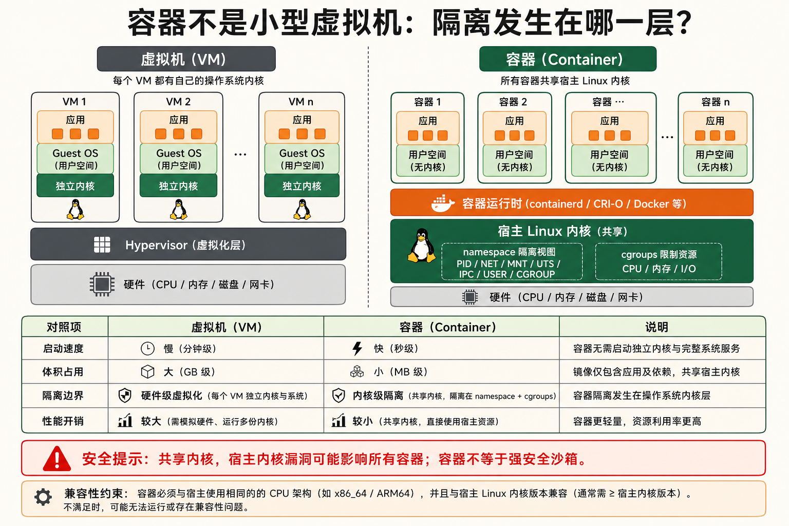
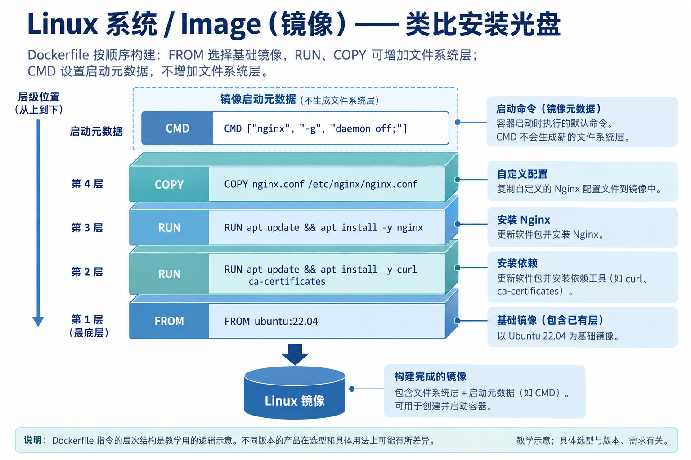
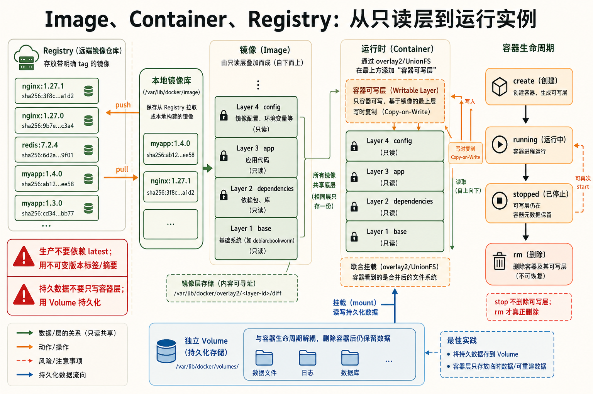
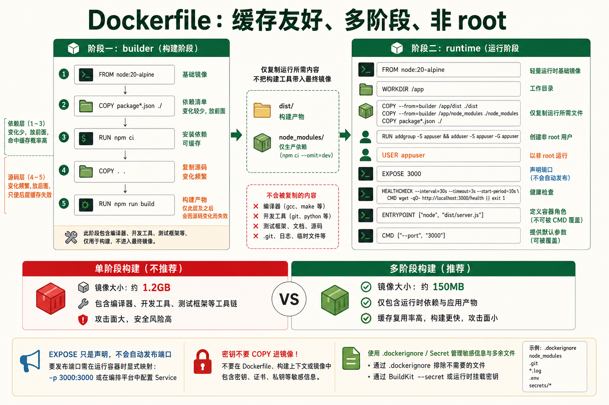
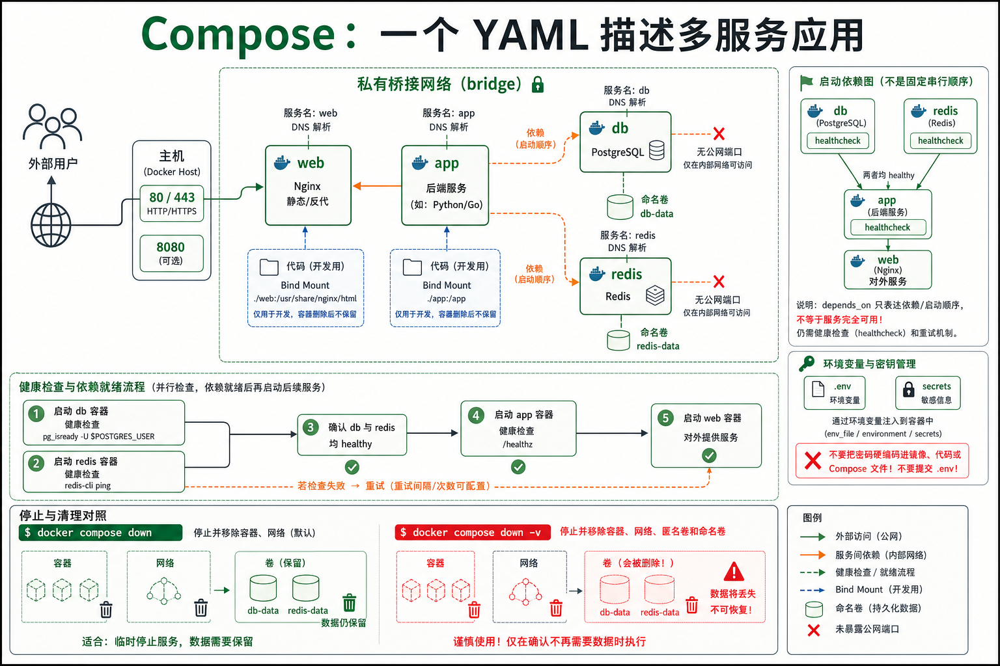
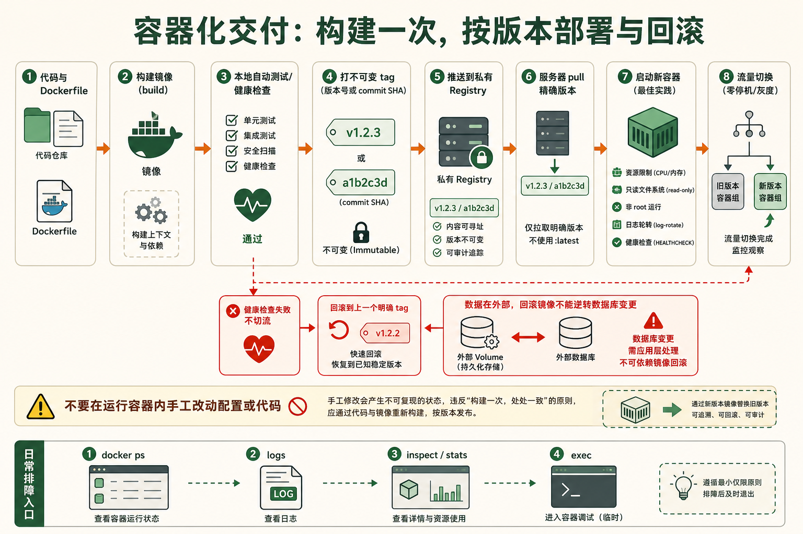

1容器 vs 虚拟机的本质区别
场景：为什么说容器"不是轻量级虚拟机"
基础从硬件虚拟化到操作系统虚拟化
虚拟机（VM） 通过 Hypervisor（如 KVM、VMware）在物理硬件上模拟出完整的虚拟硬件——虚拟 CPU、虚拟内存、虚拟磁盘、虚拟网卡——然后在这个虚拟硬件上安装一个完整的 Guest OS。每个 VM 运行自己的内核，拥有独立的 init 进程、驱动、系统调用接口。隔离性极强但资源开销巨大：每个 VM 至少要几百 MB 内存来跑操作系统本身。
容器 不模拟硬件，不运行独立内核。它利用 Linux 内核的两个特性实现隔离：namespace（命名空间，让进程看到自己独立的 PID、网络、挂载、用户等视图）和 cgroups（控制组，限制进程能使用的 CPU、内存、IO 等资源）。容器里的进程和宿主机的其他进程共享同一个内核，只是被 namespace "隔离了视野"，被 cgroups "限制了资源"。
| 维度 | 虚拟机 (VM) | 容器 (Container) |
|---|---|---|
| 虚拟化层级 | 硬件层（Hypervisor） | 操作系统层（内核 namespace + cgroups） |
| 内核 | 每个 VM 独立内核 | 所有容器共享宿主机内核 |
| 启动速度 | 分钟级（引导 OS + 服务） | 秒级甚至毫秒级（只需 fork 进程） |
| 镜像大小 | GB 级（含完整 OS） | MB 级（alpine 基础镜像仅 5MB） |
| 性能损耗 | ~5-15%（虚拟化开销） | 几乎无损耗（原生进程，仅多了 namespace 查表） |
| 内存开销 | 每个 VM 数百 MB 起 | 每个容器仅进程本身的内存 |
| 隔离性 | 强（独立内核 → 安全边界） | 弱（共享内核 → 逃逸风险） |
| 密度 | 一台物理机跑十几到几十个 VM | 一台物理机跑数百到数千个容器 |
| 典型工具 | KVM / VMware / VirtualBox | Docker / containerd / Podman / LXC |
容器和宿主机共享内核的深层含义
共享内核意味着什么？
- 容器里运行的二进制文件必须是和宿主机内核兼容的 ELF 格式（x86_64 主机上可以跑 x86_64 容器，但不能跑 ARM 容器，除非有 qemu 模拟）
- 容器的"Linux 发行版"只是用户空间文件系统的差异——
ubuntu:22.04镜像只是 Ubuntu 的目录结构和库文件，里面没有内核 - 容器可以调用宿主机的内核模块（如 iptables、overlayfs），但无法加载自己的内核模块
- 宿主机的内核漏洞可能被容器利用来逃逸——所以容器不能替代真正的安全沙箱
容器的资源限制 —— cgroups 的实操
# 启动一个内存限制为 512MB 的容器
docker run -d --memory="512m" --name limited-app nginx
# 限制 CPU 使用（只能使用 1.5 个核心）
docker run -d --cpus="1.5" --name cpu-limited nginx
# 查看容器的资源限制
docker inspect limited-app | grep -A 10 '"Memory"'
# 在宿主机上查看 cgroup 配置（systemd cgroup v1 为例）
cat /sys/fs/cgroup/memory/docker/$(docker inspect -f '{{.Id}}' limited-app)/memory.limit_in_bytes
# 输出: 536870912 (= 512MB)PID namespace（进程隔离）、NET namespace（网络隔离）、MNT namespace（挂载点隔离）、UTS namespace（主机名/域名隔离）、IPC namespace（进程间通信隔离）、USER namespace（用户/组 ID 隔离）、CGROUP namespace（cgroup 视图隔离）。Docker 默认启用 PID、NET、MNT、UTS、IPC 五种。

2Docker 核心三概念
Image · Container · Registry —— 三个概念撑起整个容器生态
基础Image（镜像）—— 类比安装光盘
镜像包含分层的文件系统内容以及启动配置等元数据。Dockerfile 的部分指令会形成文件系统层，部分只改变镜像配置，因此不能机械地理解成“一条指令必定一层文件”。镜像在仓库中可作为压缩层传输，运行时由存储驱动组合为容器可见的文件系统。
比如一个 Nginx 镜像的底层结构：

查看原始图示文字
Layer 5 (最上层): CMD ["nginx", "-g", "daemon off;"] ← 启动命令
Layer 4: COPY nginx.conf /etc/nginx/nginx.conf ← 自定义配置
Layer 3: RUN apt update && apt install -y nginx ← 安装 Nginx
Layer 2: RUN apt update && apt install -y curl ca-certificates ← 安装依赖
Layer 1 (最底层): FROM ubuntu:22.04 ← 基础 OS 层每一层都是一个独立的文件系统快照。拉取镜像时如果两层相同（同一个 base image），Docker 只下载一次——这就是层共享机制。
Container（容器）—— 镜像的运行实例
容器 = 镜像 + 一个可写层（Container Layer）。镜像的所有层都是只读的，Docker 使用 UnionFS（联合文件系统）（通常是 overlay2）把只读层和可写层合并成一个统一视图。进程在容器内写入文件时，数据实际写到可写层；读取文件时，从最上层往下逐层查找——这就是写时复制（Copy-on-Write）。
容器的生命周期：创建 → 运行 → 暂停 → 停止 → 删除。停止的容器数据还在（可写层未被删除），docker start 能恢复运行。删除容器（docker rm）才会丢失可写层的数据——这就是为什么持久化数据必须用 Volume。
Registry（镜像仓库）—— 类比 GitHub
Registry 是镜像的存储和分发中心。Docker Hub 是最大公开 Registry（类似 GitHub）。企业内部通常搭建私有 Registry（如 Harbor）来管理内部镜像。
镜像的完整名称格式：registry.example.com:5000/namespace/image:tag。不写 registry 默认指向 Docker Hub；不写 tag 默认 :latest。
# 镜像命名的完整形式拆解
docker pull nginx:1.25
# ^^^^ ^^^^
# 镜像名 标签
# 完整等价于: docker pull docker.io/library/nginx:1.25
# ^^^^^^^^^^^^^^^^^^
# registry namespace:latest 只是默认标签名，不是"最新版本"。如果推送镜像时不指定 tag，Docker Hub 不会自动打上 latest——它只是拉取时的默认缺省值。生产环境永远使用明确的版本号标签（如 nginx:1.25.3），否则某天 docker pull 可能拉到一个不兼容的大版本更新，引发生产事故。
3Docker 基础命令大全
镜像操作 —— 拉取、查看、构建、推送
必备| 命令 | 作用 | 常用示例 |
|---|---|---|
docker pull | 从 Registry 拉取镜像 | docker pull nginx:1.25 |
docker push | 推送镜像到 Registry | docker push myrepo/app:v1.0 |
docker images | 列出本地所有镜像 | docker images --filter dangling=true |
docker tag | 给镜像打标签 | docker tag app:v1 myrepo/app:v1 |
docker rmi | 删除本地镜像 | docker rmi nginx:1.25 |
docker build | 从 Dockerfile 构建镜像 | docker build -t myapp:v1 . |
docker save | 导出镜像为 tar 文件 | docker save -o nginx.tar nginx:1.25 |
docker load | 从 tar 文件导入镜像 | docker load -i nginx.tar |
docker history | 查看镜像的层历史 | docker history nginx:1.25 |
docker inspect | 查看镜像/容器详细 JSON | docker inspect nginx:1.25 |
清理 Docker 占用的磁盘空间
# 一键清理（删除停止的容器、未使用的网络、悬空镜像、构建缓存）
docker system prune -a
# 分别查看各部分占用
docker system df
# TYPE TOTAL ACTIVE SIZE RECLAIMABLE
# Images 15 3 12.5GB 10.2GB (81%)
# Containers 20 2 2.1GB 1.9GB (90%)
# Local Volumes 8 2 3.5GB 2.8GB (80%)
# Build Cache 45 0 4.2GB 4.2GB (100%)容器操作 —— 启动、停止、进入、排错
必备| 命令 | 作用 | 常用示例 |
|---|---|---|
docker run | 创建并启动容器 | docker run -d -p 80:80 --name web nginx |
docker ps | 列出运行中的容器 | docker ps -a（含已停止） |
docker stop | 优雅停止容器（SIGTERM → SIGKILL） | docker stop web |
docker start | 启动已停止的容器 | docker start web |
docker restart | 重启容器 | docker restart web |
docker rm | 删除容器 | docker rm web；docker rm -f web（强制） |
docker exec | 在运行中容器内执行命令 | docker exec -it web bash |
docker logs | 查看容器日志 | docker logs -f --tail 100 web |
docker cp | 容器和宿主机之间拷贝文件 | docker cp web:/etc/nginx/nginx.conf ./ |
docker stats | 实时查看容器资源使用 | docker stats web |
docker top | 查看容器内进程列表 | docker top web |
docker diff | 查看容器文件系统的变更 | docker diff web |
docker commit | 将容器保存为新镜像 | docker commit web myapp:debug |
docker run 常用参数速查
# 最完整的启动示例
docker run \
-d \ # 后台运行
--name myapp \ # 容器名称
--restart unless-stopped \ # 重启策略（Docker 启动时自动恢复）
-p 8080:80 \ # 端口映射（宿主机:容器）
-p 127.0.0.1:3306:3306 \ # 只绑定本地 IP
-v /data:/app/data \ # 挂载卷（宿主机路径:容器路径）
-v app-config:/etc/app \ # 挂载命名卷
-e DATABASE_URL=postgres://... \ # 环境变量
-e TZ=Asia/Shanghai \ # 时区
--memory="512m" \ # 内存限制
--cpus="1.5" \ # CPU 限制
--log-driver json-file \ # 日志驱动
--log-opt max-size=10m \ # 日志轮转大小
--log-opt max-file=3 \ # 日志保留份数
--network mynet \ # 加入自定义网络
--dns 8.8.8.8 \ # DNS 服务器
--health-cmd="curl -f http://localhost/" \ # 健康检查
--health-interval=30s \
--health-retries=3 \
myimage:v1.0docker exec 排错必备
# 进入容器内部（排错第一手段）
docker exec -it container_name bash
# -i 保持标准输入打开
# -t 分配伪终端
# 如果容器没有 bash，用 sh:
docker exec -it container_name sh
# 不进入容器，直接执行单条命令
docker exec container_name cat /etc/nginx/nginx.conf
docker exec container_name nginx -t # 测试 Nginx 配置
docker exec container_name ps aux # 查看进程
docker exec container_name df -h # 查看磁盘
docker exec container_name env # 查看环境变量docker logs —— 日志查看与跟踪
# 查看最近 100 行日志
docker logs --tail 100 web
# 实时跟踪（等同于 tail -f）
docker logs -f web
# 显示时间戳
docker logs -t web
# 查看最近 30 分钟的日志
docker logs --since 30m web
# 查看特定时间段
docker logs --since 2026-07-01T00:00:00 --until 2026-07-31T23:59:59 web
# 组合拳：跟踪+时间戳+最近 200 行
docker logs -ft --tail 200 web4编写 Dockerfile —— 构建你自己的镜像
场景：我要把 Node.js 应用打包成镜像，能在任何地方跑
必备关键指令速查
| 指令 | 作用 | 是否会创建新层 |
|---|---|---|
FROM | 指定基础镜像（每个 Dockerfile 必须以此开头） | 否（引用已有层） |
RUN | 在镜像构建时执行命令（如安装软件包） | 是 |
COPY | 从构建上下文复制文件到镜像（纯文件拷贝） | 是 |
ADD | 类似 COPY 但支持 URL 下载和自动解压 tar | 是 |
WORKDIR | 设置工作目录（后续指令的相对路径基准） | 否 |
ENV | 设置环境变量（构建时和运行时都生效） | 是 |
ARG | 构建参数（仅在构建时可用，运行时不可见） | 否 |
EXPOSE | 声明容器监听的端口（文档性质，不实际映射） | 否 |
CMD | 容器启动时的默认命令（可被 docker run 参数覆盖） | 否 |
ENTRYPOINT | 容器启动时的入口程序（CMD 作为参数追加其后） | 否 |
USER | 切换运行用户（安全最佳实践：不要用 root） | 否 |
VOLUME | 声明匿名卷挂载点 | 否 |
COPY vs ADD —— 什么时候用哪个
普通文件复制优先使用 COPY，语义直观。ADD 能自动解压构建上下文中的本地 tar 归档，也支持获取远程 URL；远程归档不会因来自 URL 就自动解压。需要远程下载时还应考虑校验、缓存和版本固定，不能把“远程下载并解压”当作 ADD 的单步默认行为。
CMD vs ENTRYPOINT —— 执行模型的两层设计
# 只有 CMD（默认执行，可被覆盖）
CMD ["python", "app.py"]
# docker run myimg → python app.py
# docker run myimg bash → bash（CMD 被覆盖）
# 只有 ENTRYPOINT（不能被覆盖，参数追加到后面）
ENTRYPOINT ["python", "app.py"]
# docker run myimg → python app.py
# docker run myimg --debug → python app.py --debug（参数追加）
# docker run myimg bash → python app.py bash（bash 成了 app.py 的参数！）
# 组合使用（最佳实践：ENTRYPOINT 定容器角色，CMD 定默认参数）
ENTRYPOINT ["nginx"]
CMD ["-g", "daemon off;"]
# docker run myimg → nginx -g 'daemon off;'
# docker run myimg -t → nginx -t（覆盖 CMD 但保留 ENTRYPOINT）完整 Dockerfile 示例：多阶段构建 Node.js 应用
# ===== 第一阶段：构建 =====
FROM node:20-alpine AS builder
WORKDIR /app
COPY package*.json ./
RUN npm ci --only=production
COPY . .
RUN npm run build
# ===== 第二阶段：运行（最终镜像） =====
FROM node:20-alpine
WORKDIR /app
RUN addgroup -g 1001 -S appgroup && adduser -S appuser -G appgroup -u 1001
# 从构建阶段复制产物
COPY --from=builder /app/dist ./dist
COPY --from=builder /app/node_modules ./node_modules
COPY --from=builder /app/package.json ./
# 安全：切换到非 root 用户
USER appuser
EXPOSE 3000
ENV NODE_ENV=production
CMD ["node", "dist/server.js"]层缓存优化 —— 让构建快 10 倍
Docker 构建镜像时，每条指令生成一层。如果某层的内容没变（包括上下文文件的内容和指令文本），Docker 就复用缓存的层，跳过执行。关键策略：把变化频率最低的指令放在前面。
# ❌ 不好的顺序（每次改代码都要重新 npm install）
FROM node:20
WORKDIR /app
COPY . .
RUN npm install # ← 代码改了，这一层缓存失效，要重跑
# ✅ 好的顺序（不频繁变的依赖先装，经常变的代码后复制）
FROM node:20
WORKDIR /app
COPY package*.json ./ # ← 只有改了 package.json 才会重装依赖
RUN npm ci
COPY . . # ← 改了代码只要重新 COPY，复用 npm ci 的缓存传统 Dockerfile 中，构建工具（如 GCC、Maven、npm devDependencies）会留在最终镜像里。多阶段构建让你在第一阶段用完整工具链编译，第二阶段只复制运行时需要的产物——最终镜像不包含任何构建工具，体积从 1.2GB 降到 150MB。这就是为什么 Go 应用的 Docker 镜像可以做到十几 MB：第一阶段用
golang:1.21 编译，第二阶段用 scratch（空镜像）只复制编译好的二进制文件。
5docker-compose —— 编排多个容器
场景：一个应用需要 Web 服务器 + 应用 + 数据库 + 缓存，怎么一键启动？
进阶docker-compose 解决什么问题
一个 docker run 调用创建并启动一个容器；多服务应用若逐个调用，需要自行维护网络、卷和启动顺序。Docker Compose 用 YAML 文件声明这些服务及其依赖，通过当前常见的 docker compose 命令统一管理；旧版独立工具的命令写作 docker-compose。下面的示例按本机安装版本选择命令。
完整 compose 文件示例：LAMP 栈
version: "3.8"
services:
# Apache + PHP
web:
image: php:8.2-apache
container_name: lamp-web
ports:
- "80:80"
- "443:443"
volumes:
- ./html:/var/www/html
- ./php.ini:/usr/local/etc/php/php.ini
environment:
- PHP_MEMORY_LIMIT=256M
depends_on:
- db
- redis
networks:
- lamp-net
restart: unless-stopped
# MySQL 数据库
db:
image: mysql:8.0
container_name: lamp-db
environment:
MYSQL_ROOT_PASSWORD: ${DB_ROOT_PASSWORD}
MYSQL_DATABASE: myapp
MYSQL_USER: myapp
MYSQL_PASSWORD: ${DB_PASSWORD}
volumes:
- db-data:/var/lib/mysql
- ./init.sql:/docker-entrypoint-initdb.d/init.sql
networks:
- lamp-net
restart: unless-stopped
healthcheck:
test: ["CMD", "mysqladmin", "ping", "-h", "localhost"]
interval: 10s
timeout: 5s
retries: 3
# Redis 缓存
redis:
image: redis:7-alpine
container_name: lamp-redis
command: redis-server --appendonly yes --maxmemory 256mb
volumes:
- redis-data:/data
networks:
- lamp-net
restart: unless-stopped
# phpMyAdmin（可选，调试用）
phpmyadmin:
image: phpmyadmin:latest
container_name: lamp-pma
environment:
PMA_HOST: db
ports:
- "8080:80"
depends_on:
- db
networks:
- lamp-net
profiles:
- debug # 默认不启动，需要时: docker-compose --profile debug up
volumes:
db-data:
redis-data:
networks:
lamp-net:
driver: bridge
docker-compose 常用命令
# 启动所有服务（后台）
docker-compose up -d
# 启动特定服务
docker-compose up -d web db
# 查看所有服务状态
docker-compose ps
# 查看日志（所有服务）
docker-compose logs -f --tail 50
# 查看特定服务日志
docker-compose logs -f web
# 停止所有服务（保留数据卷）
docker-compose down
# 停止并删除数据卷（彻底清理）
docker-compose down -v
# 重新构建并启动（代码改了）
docker-compose up -d --build
# 在运行的服务中执行命令
docker-compose exec web bash
docker-compose exec db mysql -u root -p
# 缩放服务实例数（需要去除 container_name 和端口冲突）
docker-compose up -d --scale web=3compose 文件中的
${DB_PASSWORD} 变量来自同目录下的 .env 文件。不要把密码硬编码在 compose 文件里——把 .env 加入 .gitignore，用 .env.example 提供模板。6实用场景与最佳实践
场景一：用 Docker 快速测试新软件
进阶5 秒进入 Ubuntu 环境 —— 用完即弃
# 快速进入一个干净 Ubuntu 环境测试，退出自动删除（不留痕迹）
docker run -it --rm ubuntu:22.04 bash
# 带工具链的开发环境
docker run -it --rm -v $(pwd):/workspace -w /workspace ubuntu:22.04 bash
# 测试特定版本软件
docker run -it --rm python:3.9 python -c "print('Hello')"
docker run -it --rm node:18 node -e "console.log(process.version)"运行一个临时数据库实例
# 启动 PostgreSQL 实例（5 秒可用）
docker run -d --name pg-temp \
-e POSTGRES_PASSWORD=temp123 \
-p 5432:5432 \
postgres:16-alpine
# 连上去测试
psql -h localhost -U postgres
# 测试完毕删除
docker rm -f pg-temp场景二：容器化部署你的应用（完整流程）
必备从代码到运行的完整步骤
# 1. 克隆代码
git clone https://github.com/yourname/myapp.git && cd myapp
# 2. 检查 Dockerfile（如果不存在，写一个）
cat Dockerfile
# 3. 构建镜像
docker build -t myapp:$(git rev-parse --short HEAD) .
# 4. 本地运行测试
docker run -d -p 3000:3000 --name myapp-test myapp:latest
curl http://localhost:3000/health
# 5. 测试通过，打上版本标签
docker tag myapp:latest myrepo/myapp:v1.2.0
# 6. 推送到 Registry
docker login myrepo.example.com
docker push myrepo/myapp:v1.2.0
# 7. 在服务器上部署
ssh deploy@server "docker pull myrepo/myapp:v1.2.0 && \
docker stop myapp && docker rm myapp && \
docker run -d --name myapp --restart unless-stopped -p 3000:3000 myrepo/myapp:v1.2.0"
# 8. 验证部署
curl http://server:3000/healthDockerfile 最佳实践清单
- 使用 .dockerignore——排除 node_modules、.git、日志等，减小构建上下文
- 使用特定版本的基础镜像——
node:20.11-alpine而非node:latest - 合并 RUN 指令——
RUN apt update && apt install -y pkg && rm -rf /var/lib/apt/lists/*，减少层数 - 使用非 root 用户运行——
USER 1000 - 设置默认的资源限制——compose 文件中指定
mem_limit和cpus - 不要把密码构建进镜像——用环境变量或 secrets，运行时传入
- 一个容器一个进程——不要在一个容器里跑 Nginx + PHP-FPM + Cron，用 compose 拆开
容器停止后，可写层的数据还在磁盘上。容器被
docker rm 删除后，可写层被彻底删除，数据永久丢失。任何需要持久化的数据必须写入 Volume 或绑定挂载的宿主机目录。临时文件、缓存、会话数据可以放在容器内——丢了无所谓。